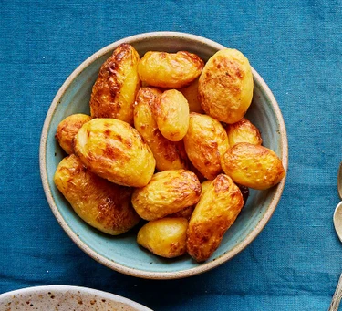

Description
Cook canned potatoes in an air fryer to make these alternative roasties. Though they're not the same as oven-cooked, they do turn golden and crisp
Ingredients
- Can peeled potatoes in water
- Sunflower or vegetable oil
Steps
- Drain the potatoes in a colander, rinse and leave to drain again. Meanwhile, heat the air fryer for 2-3 mins at
190C. Put the potatoes in a bowl and drizzle over the oil. Season well with salt and freshly ground black pepper, plus any other seasonings you like (see tip, below).
- Mix well so the potatoes are fully coated in the oil and seasoning. Transfer to the air fryer basket and cook for 20-25 mins until golden and crisp.
return to the top